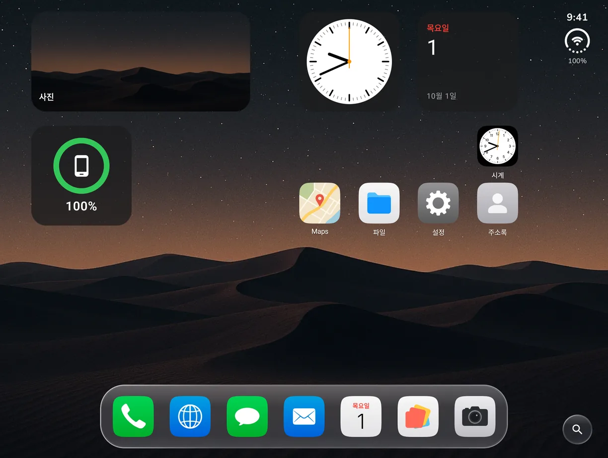
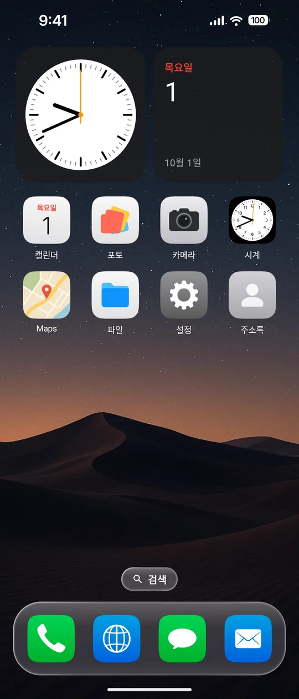

접은 화면 · 펼친 화면 배치, 함께 또는 따로Folded and unfolded layouts, shared or separate
- 설정 › 홈 화면에서 앱 배치를 고를 수 있어요. 펼친 화면으로 맞추기, 접은 화면으로 맞추기, 화면마다 따로 쓰기 중에 골라요.
- 따로 쓰면 홈 앱과 독을 화면마다 기억해요. 위젯·폴더·펼친 화면 전용 페이지는 함께 써요.
- 펼친 화면 하단 독: 아이콘을 오른쪽 독과 같은 크기로 맞추고, 줄 간격을 고르게 다듬었어요. 폴드7 등 다른 폴드에서도 쓸 수 있어요.
- 독에 넣은 앱이 커버에서도 모두 보이고, 펼친 화면 앱 보관함·검색에서는 오른쪽 위 시계 표시를 숨겼어요.
- Pick how apps are laid out in Settings › Home Screen: match the unfolded screen, match the folded screen, or keep separate layouts.
- Separate layouts remember Home apps and the dock per screen. Widgets, folders and the unfolded-only page stay shared.
- Unfolded bottom dock: icons match the side-dock size and rows are evenly spaced. It now works on Fold7 and other Folds too.
- Every dock app shows on the cover screen, and the clock rail is hidden in the unfolded App Library and search.

